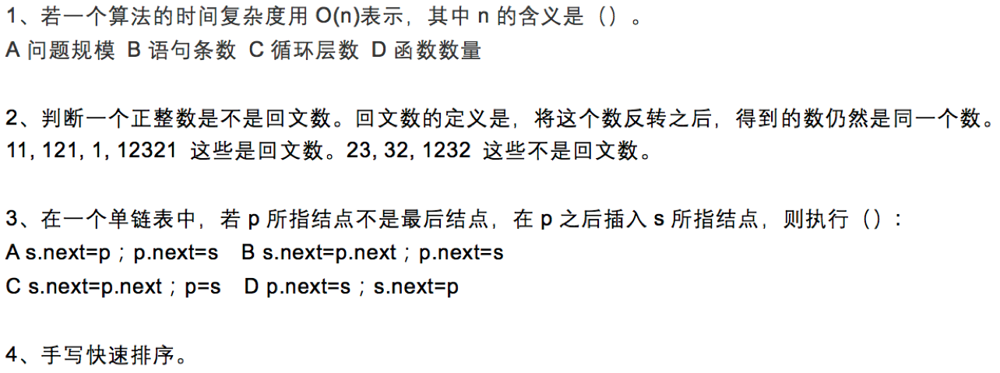
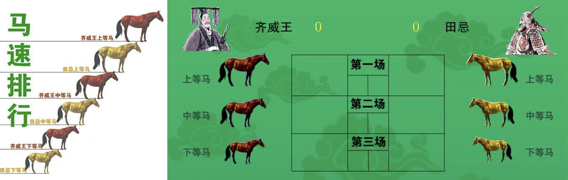

数据结构与算法（Python）
学习目标:
- 简单了解算法是什么
面试题

大部分公司面试时，都会出数据结构与算法相关题目，因为只有数据结构与算法能反应程序员的技术水平。
田忌赛马
孙膑出谋略赢得比赛，谋略就可以看做是算法。
整理衣物
整理衣物是为了方便取用，衣物可以看做是数据，箱子可以看做是数据结构，数据结构就是把数据组织起来，为了更方便的使用数据。
数据结构与算法作用
- 没有看过数据结构和算法，有时面对问题可能会没有任何思路，不知如何下手去解决；
- 大部分时间可能解决了问题，可是对程序运行的效率和开销没有意识，性能低下；
- 有时会借助别人开发的利器暂时解决了问题，可是遇到性能瓶颈的时候，又不知该如何进行针对性的优化。
计算机界著名公式，由瑞士计算机科学家尼克劳斯·威茨（Niklaus Wirth）提出，也因此获得图灵奖。
程序 = 数据结构 + 算法